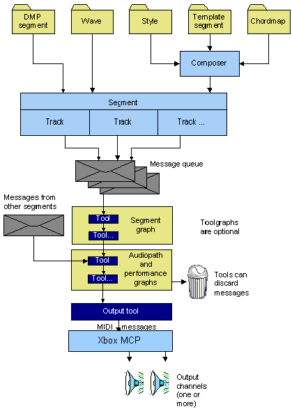

Typically, a DirectMusic application obtains musical data from one or more of the following sources:
Data from these sources is encapsulated in segment objects. Each segment object represents data from a single source. At any given moment in a performance, one primary segment and any number of secondary segments can be playing. Source files can be mixed; for example, a secondary segment based on a wave file can be played along with a primary segment based on an authored segment file.
A segment comprises one or more tracks, each containing timed data of a particular kindfor example, notes or tempo changes. Most tracks generate time-stamped messages when the segment is played by the performance. Other kinds of tracks supply data only when queried by the performance.
The performance first dispatches the messages to any application-defined tools. Such tools are grouped in segment toolgraphs that process only messages from particular segments, audiopath toolgraphs for messages from all segments playing on the path, and a performance toolgraph that accepts messages from all segments. A tool can modify a message and pass it on, delete it, or send a new message.
Finally, the messages are delivered to the output tool, which converts the data to MIDI format before passing it to the synthesizer. Channel-specific MIDI messages are directed to the appropriate channel group on the Xbox Media Communications Processor (MCP).
The following diagram is a simplified view of the flow of data from files to the speakers. A single segment is shown, though multiple segments can play at the same time. The segment gets its data from only one of the four possible sources shown: a wave file, a segment file authored in DirectMusic Producer, or component files combined by the composer object.

For a closer look at the flow of messages through the performance, see Using DirectMusic Messages.
For information on how to implement the process shown in the illustration, see Loading Audio Data and Playing Sounds.